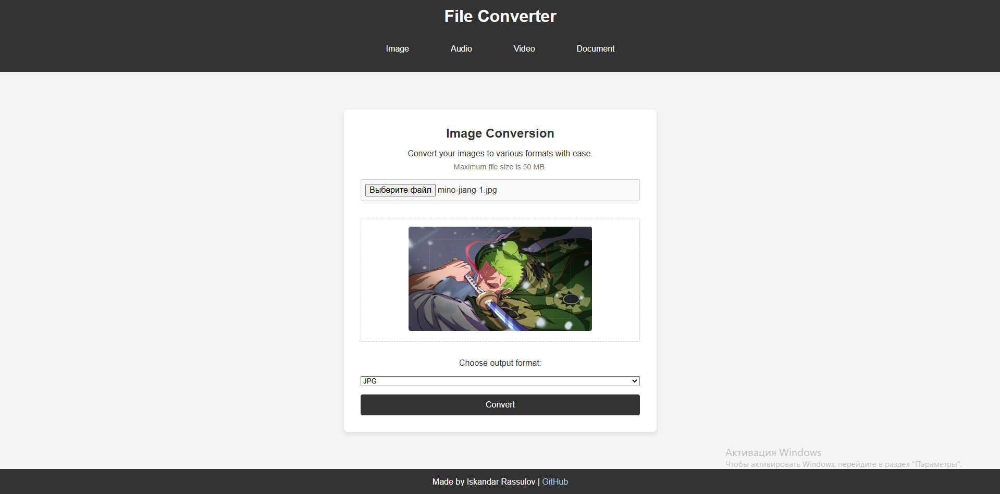

Lofi Pomodoro
A simple Pomodoro timer with lofi music integration for better focus and productivity

File Converter
Web application allows you to convert images, audio, video and documents to various formats right from your browser.

Medical Records Management System
Simplified system for managing electronic medical records